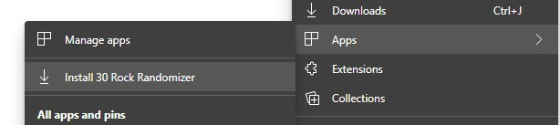

30 Rock Randomizer
You can "install" this page as an app in Chrome, Edge, Firefox on desktop, as well as on Android and iOS to enable automatic redirection to a random episode.
(Hulu on iOS doesn't support deep-linking, however, so iOS is limited to Amazon Prime Video.)
After installing, you may need to select Hulu or Amazon the first time then reload.
Edge

Chrome